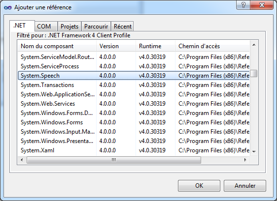

Peut-être pensiez vous que votre application ne pouvait pas communiquer d'une façon autre que par le texte ? Ce temps est révolu ! Dès maintenant, vous pouvez aisément convertir un texte en voix synthétique. Cette technologie s'appelle Text-to-Speech soit en français « texte à la parole ».
Dans ce tutoriel, nous verrons comment utiliser cette méthode dans deux langages .NET à savoir :
le C#;
le VB.NET.
À la fin de ce tutoriel, vous saurez faire communiquer votre application avec l'utilisateur via une voix de synthèse française.
Si vous suivez toujours, voici ma petite liste des prérequis :
Comme je vous avais dit, un petit supplément fort agréable serait très utile pour nous. Sans vous faire attendre, emparons-nous de cet ajout. Si vous voulez que votre application parle en français, il va vous falloir une voix française, pour cela cliquez ici, téléchargez et installez cette voix. Il s'agit de la voix française de Virginie qui est la voix française qui possède certainement la meilleure intonation et prononciation.
Maintenant que nous avons la voix française de Virginie, nous devons ajouter une référence à notre projet. Lancez votre logiciel préféré (oui , je parle bien de Visual Studio ;) ), puis créez un nouveau projet :
Onglet Fichier ;
Nouveau projet... ;
Choisissez Visual Basic ou C# (selon votre préférence) ;
Application Windows Forms ;
Choisissez un nom ;
Appuyez sur OK, mais vous devez normalement être assez grand pour savoir le faire... :D
À présent, vous devriez être devant un Form vide, entièrement vide. Nous allons, comme convenu, ajouter une référence à notre projet pour pouvoir utiliser le Text-to-Speech. Cliquez sur l'onglet Projet puis choisissez Ajouter une référence ... Une nouvelle fenêtre apparaît, celle-ci liste toutes les références disponibles. Sélectionnez l'onglet .NET et recherchez dans la liste ci-dessous le composant nommé System.Speech.

Vous êtes maintenant prêt à faire parler votre application !
Commençons dès maintenant à créer la zone de texte où l'utilisateur éditera le texte, qui sera ensuite convertie en parole par l'application :
ajoutez un RichTextBox ;
changez son nom (propriété Name) en "champtexte" ;
écrivez "Ceci est un texte" en texte (propriété Text) ;
Voici le résultat, rien de bien trop compliqué :
Même si la zone de texte est très importante, il ne faut pas oublier les boutons, car ce sont eux qui vont nous permette d'effectuer des actions, et en l’occurrence, de lire le contenu de la zone de texte :
ajoutez un bouton (Button) ;
changez son nom (propriété Name) en lecture ;
écrivez "Lecture synchrone" (nous verrons pourquoi plus tard) en texte (Propriété text).
Voici le résultat final :
Maintenant que nous avons nos principaux éléments, nous allons pouvoir rentrer dans le vif du sujet, à savoir le code.
using System.Speech;
using System.Speech.Synthesis;
Pour lancer notre lecture et entendre la douce voix de Virginie, il va falloir créer un SpeechSynthesizer (synthétiseur vocal en français), ainsi que demander à celui-ci de nous lire des données de type string (chaîne de caractères) :
Dim parole As SpeechSynthesizer = New SpeechSynthesizer()
parole.Speak(champtexte.Text)
SpeechSynthesizer parole = new SpeechSynthesizer();
parole.Speak(champtexte.Text);
Yeah, mon application parle enfin, mais (il y a toujours un mais ;) ) pourquoi parle-t-elle avec un accent horrible ? Tu avais dit que la voix de Virginie était la meilleure ...
En effet, la voix que nous entendons est la voix d’Anna, la voix par défaut de Windows qui est une voix anglaise. Pour choisir la voix de Virginie, il va falloir attribuer à notre SpeechSynthesizer la voix de Virginie, mais ça reste relativement simple :
Nous obtenons donc un simple code de trois lignes, nous permettant de déclarer notre SpeechSynthesizer, attribuer à celui-ci une voix et de le faire parler :
Dim parole As SpeechSynthesizer = New SpeechSynthesizer()
parole.SelectVoice("ScanSoft Virginie_Dri40_16kHz")
parole.Speak(champtexte.Text)
SpeechSynthesizer parole = new SpeechSynthesizer();
parole.SelectVoice("ScanSoft Virginie_Dri40_16kHz");
parole.Speak(champtexte.Text);
Maintenant, vous avez donc la jolie et douce voix de Virginie. :ange:
Avez-vous remarqué que votre application se figeait au moment de la lecture ?
C'est à ce moment qu’intervient la notion synchrone et asynchrone, à laquelle j'avais fait allusion plus haut. Je vous avais dit qu'il y aurait une différence fondamentale. En effet, avec la méthode asynchrone, votre application ne se figera pas pendant la lecture, et vous aurez la possibilité de mettre en pause, de reprendre ou de stopper la lecture, chose infaisable avec la méthode synchrone.
C'est donc pour cela que je vous conseille vivement la méthode asynchrone qui est beaucoup plus avantageuse. Pour l'utiliser, il faut déclarer notre SpeechSynthesizer en Public de façon à interagir avec lui par l'intérmédiaire de plusieurs contrôles :
Public parole As SpeechSynthesizer = New SpeechSynthesizer()
public SpeechSynthesizer parole = new SpeechSynthesizer();
Maintenant que notre SpeechSynthesizer est déclaré publiquement, nous pouvons recommencer la lecture mais cette fois-ci de façon asynchrone et comme le framework .NET est très bien fait, il n'y a pas besoin de plus de code par rapport a la méthode synchrone :
créez un nouveau bouton (Button) ;
changez sa propriété Text en lecture asynchrone ;
changez sa propriété Name en "lectureasynchrone".
Voici le résultat :
Dans l'événement Clic de notre nouveau bouton, nous allons lui demander la même chose qu'avec notre bouton de lecture précédent :
sélection de la voix ;
lui demander de lire notre chaîne de caractère qui se trouve dans notre exemple le texte contenu dans notre textbox.
Comme vous pouvez le constater, il n' y a pas de grosse différence au niveau du code de ces deux méthodes pour un résultat phénoménal, car vous avez pu remarquer que l'application ne s'est pas figée et nous allons pouvoir effectuer plusieurs actions sur notre SpeechSynthesizer. Pour poursuivre, nous allons voire comment faire nos fameux boutons de pause, de reprise et de stoppage de la lecture.
Ces actions sont facilement réalisables, elles tiennent en une simple et unique ligne de code :
parole.Pause() ' Pour mettre en pause
parole.Resume() ' Pour reprendre la lecture
parole.SpeakAsyncCancelAll() ' Et pour stopper la lecture
parole.Pause(); // Pour mettre en pause
parole.Resume(); // Pour reprendre la lecture
parole.SpeakAsyncCancelAll(); // Et pour stopper la lecture
Pour ce qui n'ont pas tout suivi, voici le code complet :
Imports System.Speech.Synthetizer
Imports System.Speech.Synthesis
Public Class Form1
Public parole As SpeechSynthesizer = New SpeechSynthesizer()
Private Sub lecture_Click(sender As System.Object, e As System.EventArgs) Handles lecture.Click
parole.SelectVoice("ScanSoft Virginie_Dri40_16kHz")
parole.Speak(champtexte.Text)
End Sub
Private Sub lectureasynchrone_Click(sender As System.Object, e As System.EventArgs) Handles lectureasynchrone.Click
parole.SelectVoice("ScanSoft Virginie_Dri40_16kHz")
parole.SpeakAsync(champtexte.Text)
End Sub
Private Sub pause_Click(sender As System.Object, e As System.EventArgs) Handles pause.Click
parole.Pause()
End Sub
Private Sub reprendre_Click(sender As System.Object, e As System.EventArgs) Handles reprendre.Click
parole.Resume()
End Sub
Private Sub stopper_Click(sender As System.Object, e As System.EventArgs) Handles stopper.Click
parole.SpeakAsyncCancelAll()
End Sub
End Class
using System;
using System.Collections.Generic;
using System.ComponentModel;
using System.Data;
using System.Drawing;
using System.Linq;
using System.Text;
using System.Windows.Forms;
using System.Speech;
using System.Speech.Synthesis;
namespace WindowsFormsApplication1
{
public partial class Form1 : Form
{
public SpeechSynthesizer parole = new SpeechSynthesizer();
public Form1()
{
InitializeComponent();
}
private void lecture_Click(object sender, EventArgs e)
{
parole.SelectVoice("ScanSoft Virginie_Dri40_16kHz");
parole.Speak(champtexte.Text);
}
private void lectureasynchrone_Click(object sender, EventArgs e)
{
parole.SelectVoice("ScanSoft Virginie_Dri40_16kHz");
parole.SpeakAsync(champtexte.Text);
}
private void pause_Click(object sender, EventArgs e)
{
parole.Pause();
}
private void reprendre_Click(object sender, EventArgs e)
{
parole.Resume();
}
private void stopper_Click(object sender, EventArgs e)
{
parole.SpeakAsyncCancelAll();
}
}
}
Maintenant que vous savez effectuer les actions principales, il me doit de vous dire qu'il existe d'autre actions qui ne sont pas très souvent utilisées mais qui peuvent être utiles dans certains cas ou suivant l'utilisation de notre fameuse voix synthétique.
Récupérer la liste des voix installées sur l'ordinateur
Récupérer la liste de voix installées sur notre ordinateur est assez simple et le mieux pour travailler avec cette liste est de la lister dans une ListBox. Créez donc cette ListBox que vous nommerez malistbox ainsi qu'un bouton :
Dans l'événement Clic du bouton qui vient d'être créé, nous lui demandons d'ajouter un Item à notre ListBox pour chaque voix installée et d'y insérer le nom (Name) de cette voix.
For Each unevoix As InstalledVoice In parole.GetInstalledVoices
malistBox.Items.Add(unevoix.VoiceInfo.Name)
Next
foreach (InstalledVoice unevoix in parole.GetInstalledVoices())
{
malistBox.Items.Add(unevoix.VoiceInfo.Name);
}
Si vous n'avez pas installé d'autre voix que Virginie, vous obtiendrez :
Il s'agit de la voix par défaut d’Anna ainsi que la voix de Virginie que nous avions installée.
Connaitre l'état de notre voix de synthèse
Nous allons maintenant voir comment récupérer l'état actuel de notre voix synthétique. Il existe trois états :
L'état 0 qui est l'état Ready : notre voix synthétique n'est pas en cours d'utilisation et donc celle-ci est prête à être utilisée ;
L'état 1 qui est l'état Speaking : notre voix est actuellement en cours d'utilisation ;
L'état 2 qui est l'état Paused : notre voix est actuellement en pause.
Pour effectuer cela, nous aurons besoin d'un bouton ainsi que d'une zone de texte (TextBox) que vous nommerez "etat" :
Au niveau du code, nous n'avons qu'à comparer la valeur de l'état :
Select Case parole.State
Case Is = SynthesizerState.Ready
etat.Text = "Ready"
Case Is = SynthesizerState.Speaking
etat.Text = "Speaking"
Case Is = SynthesizerState.Paused
etat.Text = "Paused"
End Select
switch (parole.State)
{
case SynthesizerState.Ready:
etat.Text = "Ready";
break;
case SynthesizerState.Speaking:
etat.Text = "Speaking";
break;
case SynthesizerState.Paused:
etat.Text = "Paused";
break;
}
En VB.NET les différents états possèdent un numéro d'état, ils correspondent aux états 0, 1 et 2 comme cité un peu plus haut. Nous pouvons donc comparer l'indice de ces numéros d'états :
Select Case parole.State
Case Is = 0
etat.Text = "Ready"
Case Is = 1
etat.Text = "Speaking"
Case Is = 2
etat.Text = "Paused"
End Select
Vérifier si une voix est bien installée
Si vous demandez à votre application de lire un texte avec une voix qui n'est pas installée sur l'ordinateur, votre application ne pourra malheureusement que planter. C'est pour cela que je vais vous donner ce minuscule morceau de code qui empêchera tout problème. Pour la lisibilité ainsi que pour réduire le code de votre application, ici le mieux à faire est de créer une fonction :
Public Function verifvoix(voix As String)
For Each unevoix As InstalledVoice In parole.GetInstalledVoices ' Je liste les voix installées
If unevoix.VoiceInfo.Name = voix Then ' Je vérifie ici que la voix est égale à celle de la variable voix
Return True ' Si la voix correspond bien alors la fonction renvoie True
End If
Next
Return False' Je renvoi la valeur False si la voix ne correspond pas
End Function
public bool verifvoix(string voix)
{
foreach (InstalledVoice unevoix in parole.GetInstalledVoices()) // Je liste les voix installées
{
if (unevoix.VoiceInfo.Name == voix) // Je vérifie ici que la voix est égale à celle de la variable voix
return true; // Si la voix correspond bien alors la fonction retourne true
}
return false; // Je renvoi la valeur false si la voix ne correspond pas
}
Pour effectuer cette vérification, il suffit d'appeler notre fonction verifvoix avec la voix que nous souhaitons en argument :
Dim voix As String = "ScanSoft Virginie_Dri40_16kHz"
If verifvoix(voix) = True Then ' Si la voix est installée
parole.SelectVoice("ScanSoft Virginie_Dri40_16kHz") ' Alors on l'utilise
End If
string voix = "ScanSoft Virginie_Dri40_16kHz";
if (verifvoix(voix)) // Si la voix est installée
parole.SelectVoice(voix); // Alors on l'utilise
Si vous souhaitez obtenir le projet final et commenté, vous pouvez télécharger les deux versions ci-dessous :
Dans ce tutoriel, nous avons pu remarquer la simplicité d'utilisation du système de voix de synthèse en .NET. Ainsi, que vous programmez en C# ou en VB.NET, vous n'aurez plus aucune excuse pour ne pas faire parler votre application. J’espère que ce court tutoriel vous sera utile !